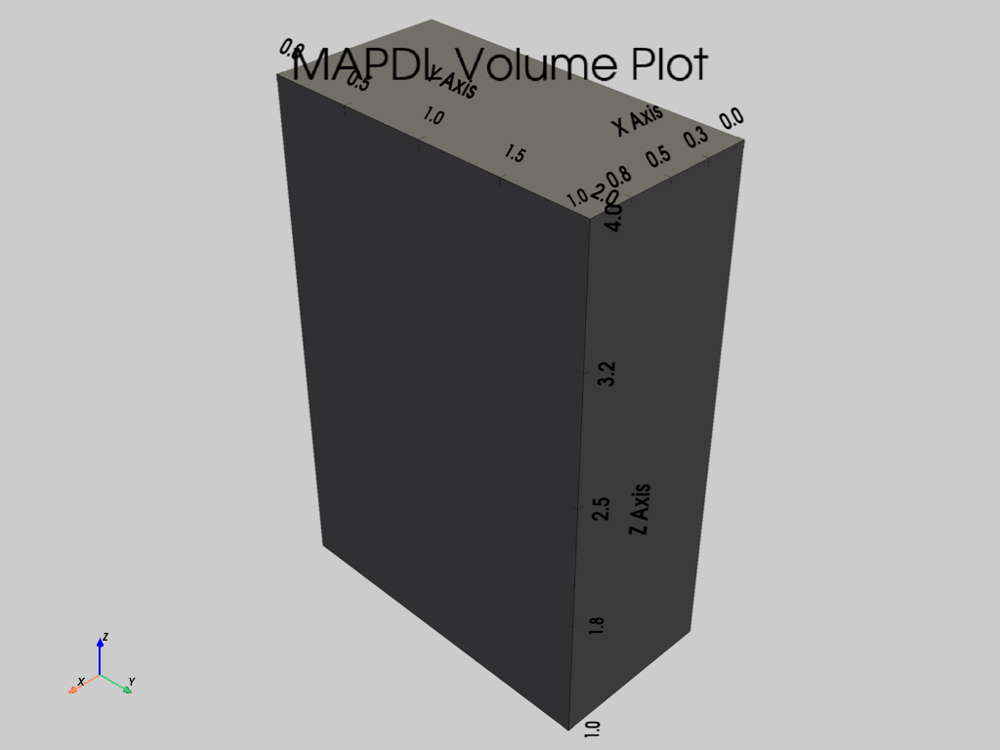
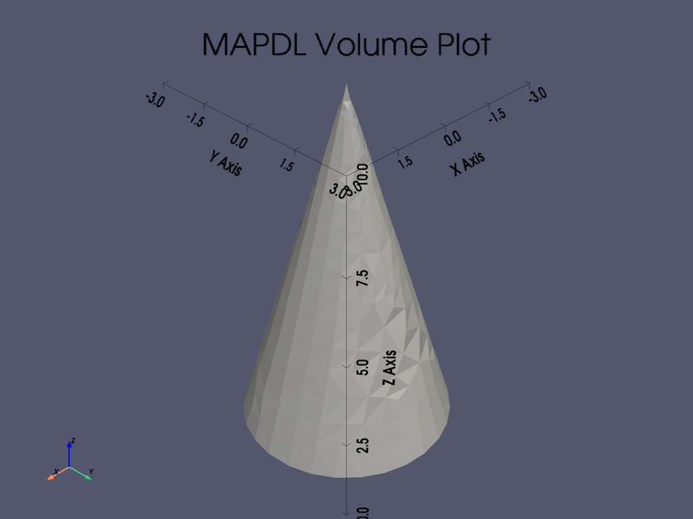
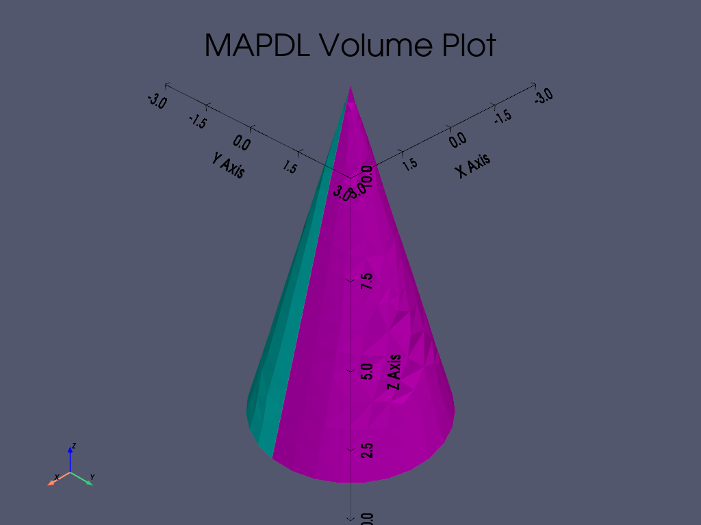
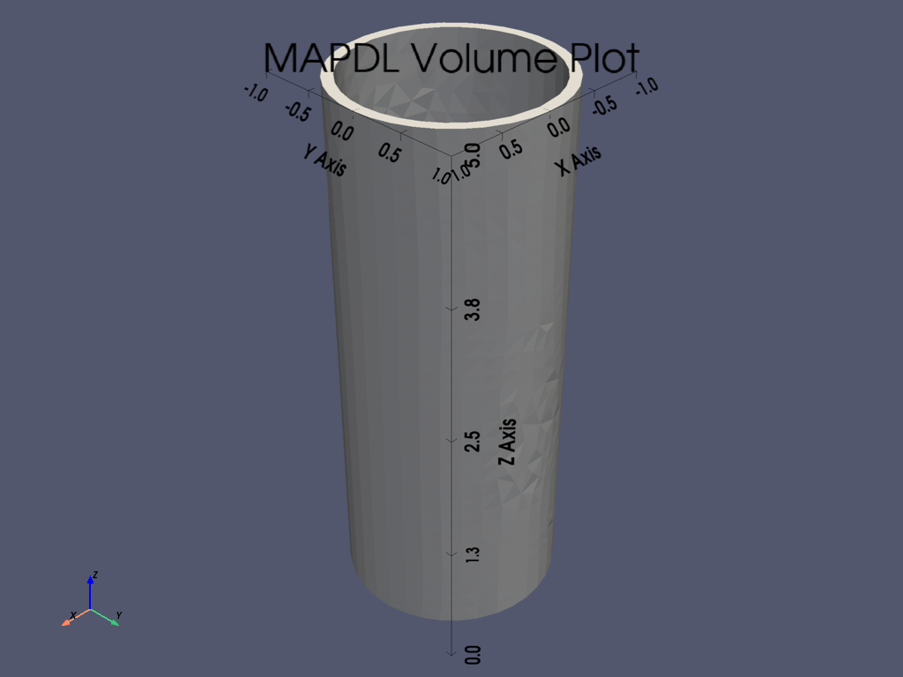
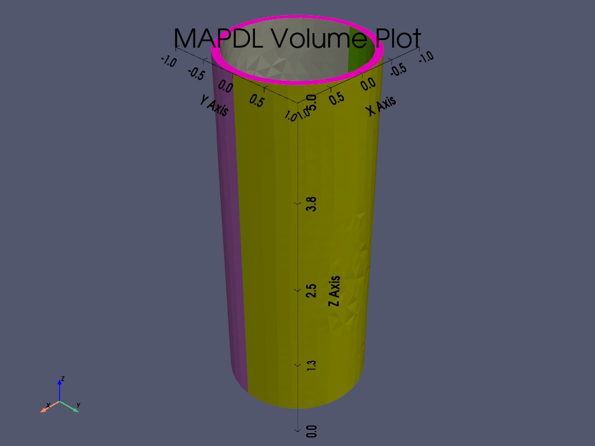
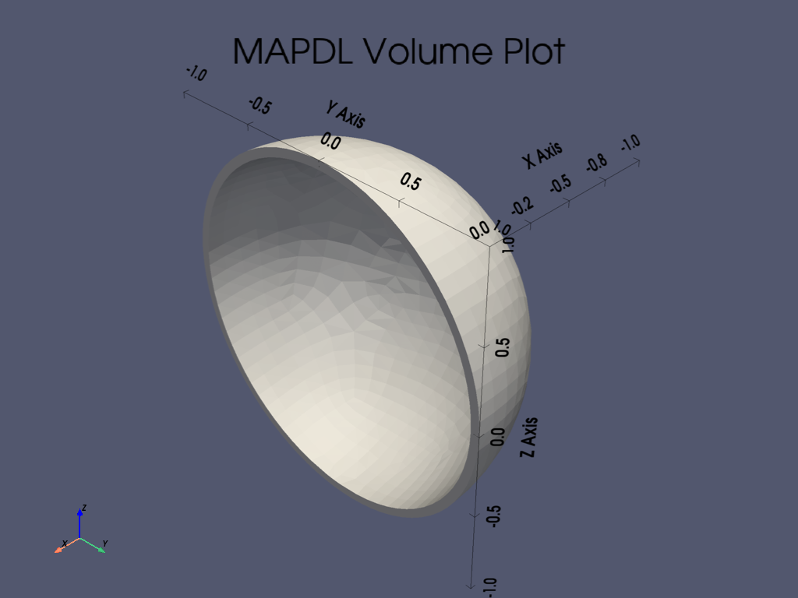

Note
Go to the end to download the full example code.
Primitives#
This example shows the different commands for volume creation, such as blocks, cylinders, etc.
from ansys.mapdl.core import launch_mapdl
# start MAPDL and enter the pre-processing routine
mapdl = launch_mapdl()
mapdl.clear()
mapdl.prep7()
print(mapdl)
Mapdl
-----
PyMAPDL Version: 0.72.0
Interface: grpc
Product: Ansys Mechanical Enterprise
MAPDL Version: 25.2
Running on: localhost
(127.0.0.1)
APDL Command: BLC4#
Create a rectangular area or block volume by corner points.
Create a 0.5 x 0.5 rectangle starting at (0.25, 0.25)
mapdl.clear()
mapdl.prep7()
anum1 = mapdl.blc4(0.25, 0.25, 0.5, 0.5)
mapdl.aplot(show_lines=True, line_width=5, show_bounds=True, cpos="xy")

Create a block with dimensions 1 x 4 x 9 with one corner of
the block at (0, 0) of the current working plane.
This method returns the volume number.
mapdl.clear()
mapdl.prep7()
vnum = mapdl.blc4(width=1, height=4, depth=9)
mapdl.vplot(show_lines=True)


APDL Command: BLC5#
Create a rectangular area or block volume by center and corner points.
This differs from BLC4 since this describes the center rather than the corner points.
Create a square centered at (0, 0) with a width of 0.5 and a
height of 0.5
mapdl.clear()
mapdl.prep7()
anum1 = mapdl.blc5(width=0.5, height=0.5)
mapdl.aplot(show_lines=True, line_width=5, show_bounds=True, cpos="xy")

Create a block with dimensions 1 x 4 x 9 with the cetner at
(0, 0) of the current working plane.
This method returns the volume number.
mapdl.clear()
mapdl.prep7()
vnum = mapdl.blc5(width=1, height=4, depth=9)
mapdl.vplot(show_lines=True, show_bounds=True)


APDL Command: BLOCK#
Create a block volume based on working plane coordinates with the
size (1 x 2 x 3)
mapdl.clear()
mapdl.prep7()
vnum = mapdl.block(0, 1, 0, 2, 1, 4)
mapdl.vplot(
show_lines=False,
show_bounds=True,
color=(0.5, 0.5, 0.5),
background=(0.8, 0.8, 0.8),
)
- 

APDL Command: CON4#
Create a conical volume anywhere on the working plane.
Create a cone with a bottom radius of 3 and a height of 10.
mapdl.clear()
mapdl.prep7()
vnum = mapdl.con4(rad1=3, rad2=0, depth=10)
mapdl.vplot(show_lines=False, quality=6, show_bounds=True)
- 
- 
APDL Command: CONE#
Create a conical volume centered about the working plane origin.
Create a quarter cone with a bottom radius of 3, top radius of 1 and
a height of 10 centered at (0, 0).
mapdl.clear()
mapdl.prep7()
vnum = mapdl.cone(rbot=5, rtop=1, z1=0, z2=10, theta1=180, theta2=90)
mapdl.vplot(show_lines=False, quality=6, show_bounds=True)


APDL Command: CYL4#
Creates a circular area or cylindrical volume anywhere on the working plane.
Create a half arc centered at the origin with an outer radius of 2 and an inner radius of 1.
Note that the depth keyword argument is unset, which will
generate an area rather than a volume. Setting depth to a value
greater than 0 will generate a volume.
mapdl.clear()
mapdl.prep7()
anum = mapdl.cyl4(xcenter=0, ycenter=0, rad1=1, theta1=0, rad2=2, theta2=180)
mapdl.aplot(show_lines=True, line_width=5, show_bounds=True, cpos="xy")
Create a volumetric half arc centered at the origin with an outer radius of 2 and an inner radius of 1, and a thickness of 0.55.
mapdl.clear()
mapdl.prep7()
anum = mapdl.cyl4(
xcenter=0, ycenter=0, rad1=1, theta1=0, rad2=2, theta2=180, depth=0.55
)
mapdl.vplot(show_bounds=True)


APDL Command: CYL5#
Creates a circular area or cylindrical volume by end points.
Create a circular with one point of the circle at (1, 1) and the
other point at (2, 2)
mapdl.clear()
mapdl.prep7()
anum = mapdl.cyl5(xedge1=1, yedge1=1, xedge2=2, yedge2=2)
mapdl.aplot(show_lines=True, line_width=5, show_bounds=True, cpos="xy")

Create a cylinder with one point of the circle at (X, Y) == (1, 1)
and the other point at (X, Y) == (2, 2) with a height of 3.
mapdl.clear()
mapdl.prep7()
vnum = mapdl.cyl5(xedge1=1, yedge1=1, xedge2=2, yedge2=2, depth=5)
mapdl.vplot(show_lines=False, quality=6, show_bounds=True)


APDL Command: CYLIND#
Create a cylindrical volume centered about the working plane origin.
Create a hollow cylinder with an inner radius of 0.9 and an outer radius of 1.0 with a height of 5
mapdl.clear()
mapdl.prep7()
vnum = mapdl.cylind(0.9, 1, z1=0, z2=5)
mapdl.vplot(show_lines=False, quality=4, show_bounds=True)
- 
- 
APDL Command: PCIRC#
Create a circular area centered about the working plane origin.
In this example a circular area with an inner radius of 0.95 and an outer radius of 1 is created.
mapdl.clear()
mapdl.prep7()
anum = mapdl.pcirc(0.95, 1)
mapdl.aplot(show_bounds=True)

APDL Command: RECTNG#
Create a rectangular area anywhere on the working plane.
In this example a rectangle with one corner at (0.5, 0.5) and
another at (1.5, 2.5) is created.
mapdl.clear()
mapdl.prep7()
anum = mapdl.rectng(0.5, 1.5, 0.5, 2.5)
mapdl.aplot(show_bounds=True)

APDL Command: SPH4#
Create a spherical volume anywhere on the working plane.
This example creates a hollow sphere with an inner radius of 0.9 and
an outer radius of 1.0 centered at (0, 0)
mapdl.clear()
mapdl.prep7()
vnum = mapdl.sph4(0, 0, rad1=0.9, rad2=1.0)
mapdl.vplot(show_lines=False, show_bounds=True, smooth_shading=True)


APDL Command: SPHERE#
Create a spherical volume anywhere on the working plane.
This example creates a half hollow sphere with an inner radius of 0.9 and an outer radius of 1.0.
mapdl.clear()
mapdl.prep7()
vnum = mapdl.sphere(rad1=0.95, rad2=1.0, theta1=90, theta2=270)
mapdl.vplot(show_lines=False, quality=4, show_bounds=True)
- 

APDL Command: SPH5#
Create a spherical volume anywhere on the working plane.
This example creates a sphere with one point at (1, 1) and one
point at (2, 2)
mapdl.clear()
mapdl.prep7()
vnum = mapdl.sph5(xedge1=1, yedge1=1, xedge2=2, yedge2=2)
mapdl.vplot(show_lines=False, show_bounds=True, smooth_shading=True)


APDL Command: TORUS#
Create a toroidal volume.
This example creates a torus with an inner minor radius of 1, an intermediate radii of 2, and a major radius of 5. The values 0 and 180 define the starting and ending angles of the torus.
mapdl.clear()
mapdl.prep7()
vnum = mapdl.torus(rad1=5, rad2=1, rad3=2, theta1=0, theta2=180)
mapdl.vplot(show_lines=False, show_bounds=True, smooth_shading=False)


Stop mapdl#
mapdl.exit()
Total running time of the script: (0 minutes 19.207 seconds)